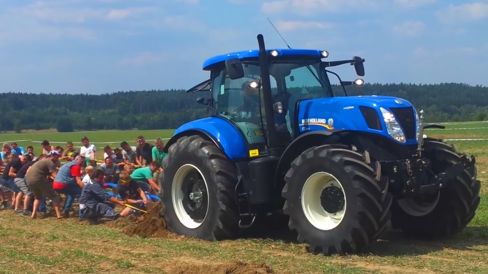
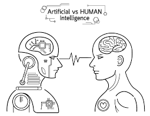
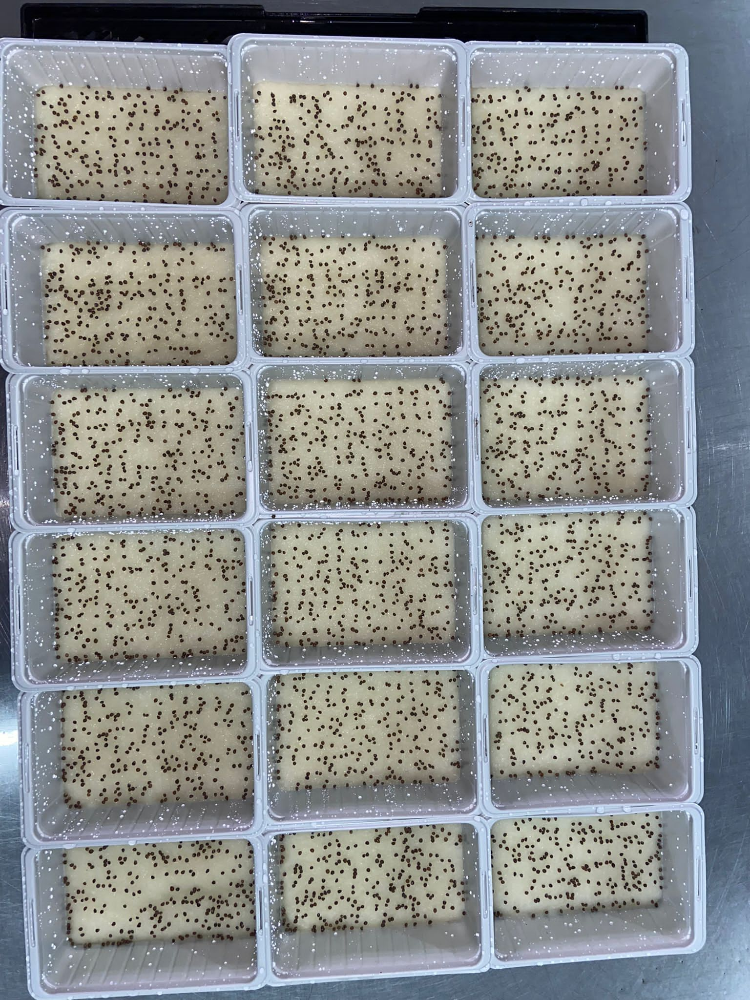
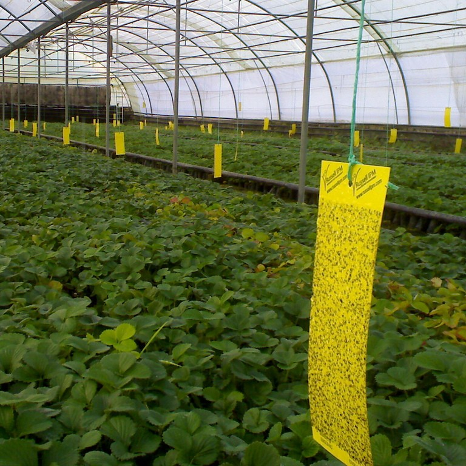
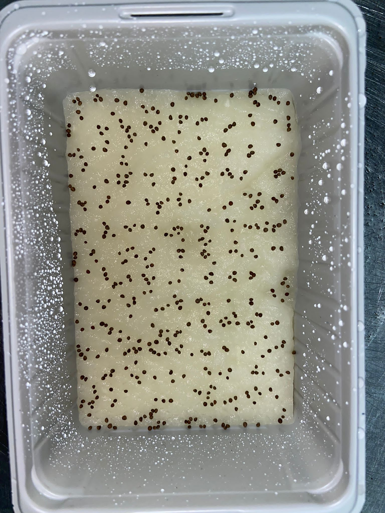
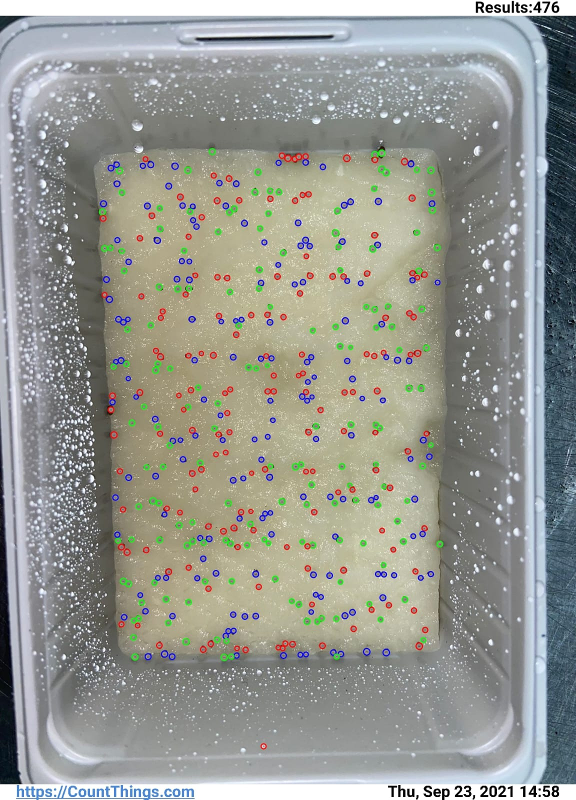
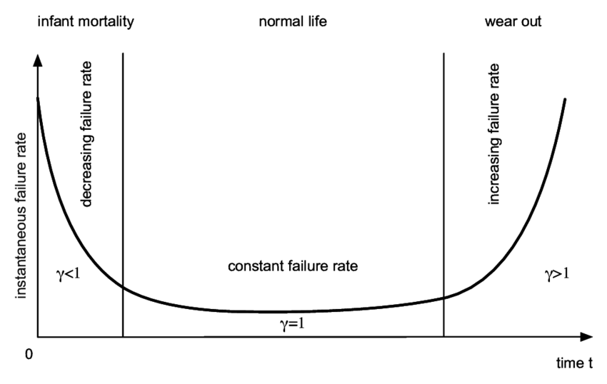
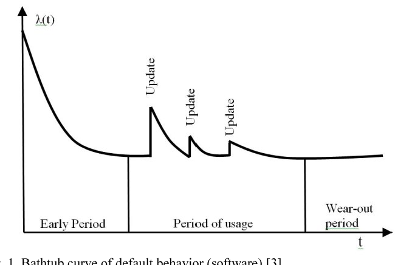

Choosing and Using Technology
Presented by: Michael Thomas Ratcliffe: Mike@Aquaponicslab.org
Hi my name is Michael and im happy to be here with you today.
I work for a company that specialises in providing bespoke tech solutions to farmers looking to get that small edge on the competition. Some products are high tech others are low tech, Whatever is the simplest way to remove a bottle neck.
We work with many farming types.
Automation and technology does not make everyone better off.
We will be discussing the what when and how of technology adoption.
Nuffield Travel: How my view of Technology changed
A few years ago now, I was lucky to recive a Nuffield farming trust scholarship that sent me around the globe to meet with farmers. I saw the best farms and the worst from around the globe.
I also got to see the newest technology and get a feel for what is coming to the farming world.
Independent of location the farmers benefiting from technology all had similar characteristics.
-They are all choosing technology that gives them a advantage over their competition.
-But more than just choosing they are using technology efficiently.
-There is no perfect solution when it comes to technology, you choose the best option at the time for your farming operation.
Technology that gives you an advantage
It has to be a USEFUL Technology:
-That your using BEFORE your competitors
-Or using it BETTER than your competition
What - When - How
In order to benefit from adopting technology it has to be a useful technology that makes you better at something you or your customers care about.
You can get a big head start from adopting a technology early on before the majority of your industry follow suit and the price drops to reflect the new production cost. But there are also big advantages to assessing the technology your currently using, is there any low hanging fruit to be had from better utilising the technology you already have.
So in summary, choose the right technology before your competition and ensure you re you using it better than your competition.
What: Is it useful
Technology should be used to make you better or quicker at something you care about
As simple as possible and only as complex as necessary
Technology should be used to make your life easier as a farmer.
If it isn't increasing the efficiencies of things you care about or saving you time then you need to ask is it beneficial to your business?.
Not all technology is useful, even the really cool and impressive looking stuff may not be useful to your farm.
If the word data arises as a benefit of a technology, make sure to ask yourself is the data useful and if so is it in a format that you can easily use without dedicating your life to data analysis.
Know what you want. Know what's important to you.
When: Adopting before the competition
If you want to be competitive you need to know your competition.
A good technology choice is one that your competition will be using in the future, the best time to adopt is before it becomes industry norm.
When technology enters an industry it takes time to work its way to all the businesses, the chart shows a simplified representation of this time delay.
The further to the left of the graph that you sit and the bigger return on investment you stand to get from technology, but the risk also increases. there is no shame in being risk averse and not everyone has what it takes to be an innovator or early adopter.
Go on to discuss the characteristics of the groups and how networking and industry engagement are key to making solid technology choices.
By being here at this get together networking with your industry and fellow farmers, its likely that you understand your industry and have a idea of what technology would help your farm before the majority of your competition.
How: using it better than your competition
Technology is a tool, it will only be useful if your using it well.
Technology is only useful if your using it well, technology adoption is more than just buying technology.
Dont just buy and forget, but embrace and periodicity asses its usefulness.
We are all guilty to some degree of having technology on the farm that does not get fully utilised, even the innovators and early adopters in the audience will have some examples.
There can be big gains from periodical assessing how you are using a technology and looking for opportunities to use it more efficiently.
The ROI of technology is impacted by how well the technology is being put to use.
Benchmarking
If you want to be competitive you need to know your competition.
If you want to be competitive you need to know your competition.
A good technology choice is one that your competition will be using in the future, the best time to adopt is before it becomes industry norm.
When technology enters an industry it takes time to work its way to all the businesses, the chart shows a simplified representation of this time delay.
The further to the left of the graph that you sit and the bigger return on investment you stand to get from technology, but the risk also increases. there is no shame in being risk averse and not everyone has what it takes to be an innovator or early adopter.
Go on to discuss the characteristics of the groups and how networking and industry engagement are key to making solid technology choices.
By being here at this get together networking with your industry and fellow farmers, its likely that you understand your industry and have a idea of what technology would help your farm before the majority of your competition.
How: Example
The worst technology choices are expensive ones that dont get used.
Because the how of technology adoption is so often overlooked I would like to drive this point a little further than the rest with an example. Without assessing Kip's and benchmarking it can often be challenging to see areas where technology is not being used correctly, but sometimes its staring you in the face.
When visiting Mike a poultry farmer in Delaware USA, he was very worried that Avian influenza would put him and his family out of business, so no expense was spared and they invested in a top of the line disinfectant gate that washes down incoming vehicles to the farm with no user input.
It is a fancy and more effective version of the wheel wash that UK farmers put into place during the outbreak of foot and mouth.
But if you looked to the left of the automatic wash station, you could see track marks on the grass where drivers had been skipping the wash down system. And I did not see a single vehicle use the system during that visit.
Situations like this often stem from the manager/owners not using the technology and setting presidents for the rest of the staff. Whilst a cheap chain link fence would solve the issue of the gate not being used do not forget the power of leading by example.
How: Advice
Keep your Knife Sharp -Periodically asses and benchmark technology usage.
Lead by Example -Change is a process, it can be understood and managed.
Check it is being used -Ask the manager how it should be done, then ask the staff to show you how it is really done.
In the previous example, Mike the poultry farmer had invested in the best technology but failed to use it. A competitor using a cheaper system well, would easily outperform him.
Farming is constantly changing and your ability to effectively use a new technology, is heavily dependant on your organisations ability to accept change. Whilst you should always look for quick solutions to promote change do not overlook the power of leading by example and your capacity to promote a organisation ethos of change brings benefit, from all people at all levels of your organisation.
Recap
Its not as simple as buying a technology, you can benefit greatly by understanding your What, When and How.
-What: Know what is important to you, will the technology deliver tangible benefits
-When: Network to stay in the know about technology developments
-How: How much you will gain depends on how well you use the technology, use it better than the competition
Take home messages
“The three most important ways to lead people are: by example… by example… by example… ”
Michael Thomas Ratcliffe: Mike@Aquaponicslab.org
In conclusion technology has and will continue to bring about monumental changes in agriculture. So don’t be the last to find out about a technology in your sector.
Make sure you get out there and network especially with farmers leading your industry.
Ensure that you know what you want from technology, look for data you can act on not just data for data’s sake.
Dont just buy and forget technology, embrace it and asses it periodicity, think can I be using this better.
And most importantly Enjoy what you do.
Thank you all.
Diesel replaced manpower


Computers are out to replace Brain Power
In order to understand who will benefit from technology in farming, we must look at who it has benefited in the past.
-The introduction of mechanisation in the form of the tractor and basic agronomy technology, has driven the production capabilities in agriculture up year on year.
You the farmer are producing more than ever, but could be seeing little returns for your increased output.
The financial benefits of technology have been reaped by the general public by aces to cheaper food and by those farmers who adapted to the change and used technology as a tool to expand or diversify.
a Personal Example


In order to understand who will benefit from technology in farming, we must look at who it has benefited in the past.
-The introduction of mechanisation in the form of the tractor and basic agronomy technology, has driven the production capabilities in agriculture up year on year.
You the farmer are producing more than ever, but could be seeing little returns for your increased output.
The financial benefits of technology have been reaped by the general public by aces to cheaper food and by those farmers who adapted to the change and used technology as a tool to expand or diversify.


In order to understand who will benefit from technology in farming, we must look at who it has benefited in the past.
-The introduction of mechanisation in the form of the tractor and basic agronomy technology, has driven the production capabilities in agriculture up year on year.
You the farmer are producing more than ever, but could be seeing little returns for your increased output.
The financial benefits of technology have been reaped by the general public by aces to cheaper food and by those farmers who adapted to the change and used technology as a tool to expand or diversify.
Reliability

In order to understand who will benefit from technology in farming, we must look at who it has benefited in the past.
Reliability

In order to understand who will benefit from technology in farming, we must look at who it has benefited in the past.